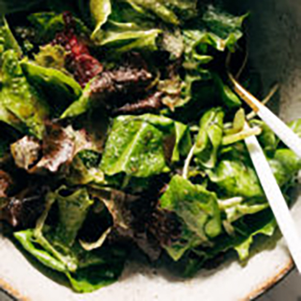
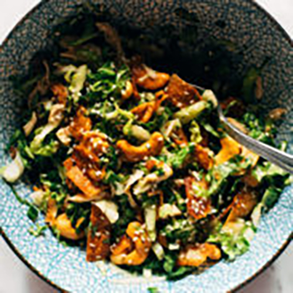

Lunch recipes
Whether you're planning to meal prep for the week or you're looking for an amazing sandwich or salad to chomp on at your desk, we've gone through our recipes and gathered a bunch for lunch!
01.Roasted Vegetable Bowls with Green Tahini

Roasted Vegetable Bowls! Crispy tender roasted veggies, buttery avocado, all together in a bowl with a drizzle of green tahini sauce.
02.Goddess Curry Chicken Salad

This Curry Chicken Salad is super clean and SO delicious. Loaded with spiced chicken, golden raisins, pistachios, herbs, and Greek yogurt + olive oil as a stand-in for mayo.
Click here for the recipe03.Instant Pot Mac and Cheese

Instant Pot Mac and Cheese - made with 5 real food ingredients. This is SO MUCH BETTER than any mac and cheese I've ever had!
Click here for the recipe04.Simple Green Salad
Every table needs this Simple Green Salad! Fresh spring greens drizzled with a maple balsamic dressing and sprinkled with whatever crunchies your salad-loving heart desires.
Click here for the recipe